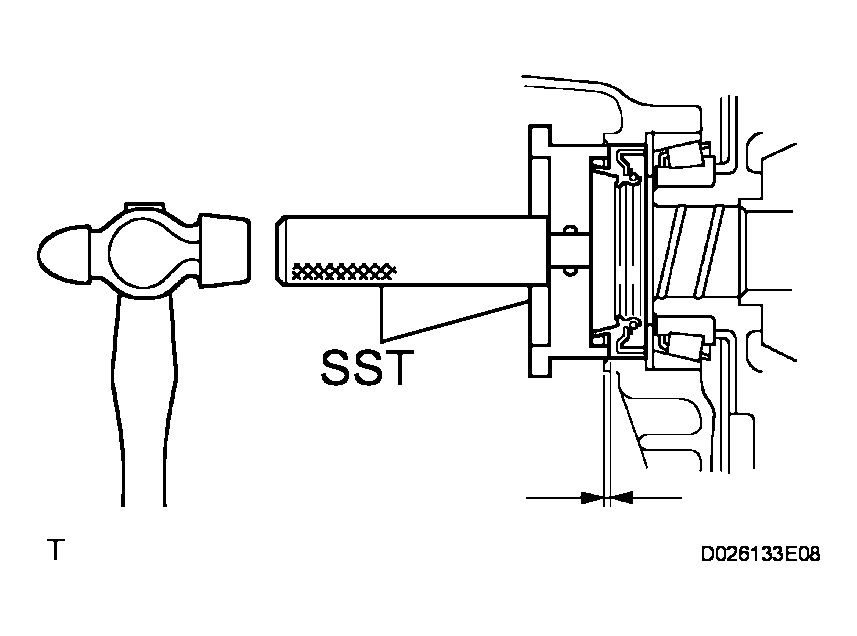
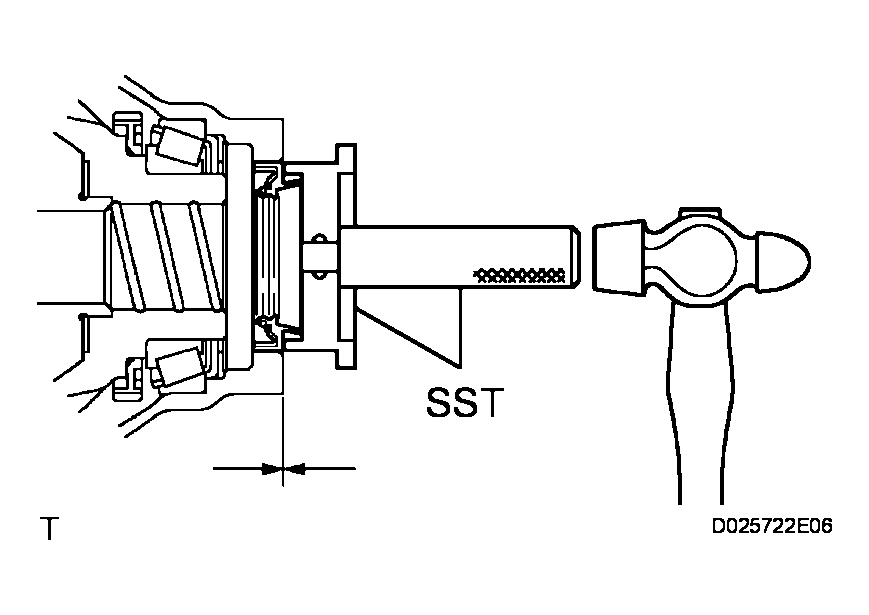

Differential Oil Seal: Replacement
- DRAIN MANUAL TRANSAXLE OIL
- Remove the filler plug and gasket.
- Remove the drain plug and gasket, and drain the manual transaxle oil.
- Install a new gasket and the drain plug.
Torque: 39 N*m (400 kgf*cm, 29 ft.*lbf)
- REMOVE FRONT WHEEL
- REMOVE ENGINE UNDER COVER LH
- REMOVE ENGINE UNDER COVER RH
- REMOVE FRONT DRIVE SHAFT ASSEMBLY LH
- Remove the front drive shaft (see REMOVAL ).
- REMOVE FRONT DRIVE SHAFT ASSEMBLY RH
HINT:
Remove the RH side by the same procedures as the LH side.
- REMOVE TRANSMISSION CASE OIL SEAL
- Using SST, tap out the oil seal.
SST 09308-00010
- Using SST, tap out the oil seal.
- REMOVE TRANSAXLE CASE OIL SEAL
- Using SST, tap out the oil seal.
SST 09308-00010
- Using SST, tap out the oil seal.
- INSTALL TRANSMISSION CASE OIL SEAL
- Coat the lip of a new oil seal with MP grease.
- Using SST and a hammer, tap in the new oil seal.
SST 09726-36010, 09950-70010 (09951-07200)

Courtesy of © TOYOTA, LICENSE AGREEMENT TMS1002Standard depth: 2.4 +-0.3 mm (0.095 +-0.012 in.)
NOTE: Be careful not to damage the lip of the oil seal.
- INSTALL FRONT TRANSAXLE CASE OIL SEAL
- Coat the lip of a new oil seal with MP grease.
- Using SST and a hammer, tap in the new oil seal.
SST 09710-20011 (09710-06071), 09950-70010 (09951-07200)

Courtesy of © TOYOTA, LICENSE AGREEMENT TMS1002Standard depth: 1.9 +-0.3 mm (0.075 +-0.012 in.)
NOTE: Be careful not to damage the lip of the oil seal.
- INSTALL FRONT DRIVE SHAFT ASSEMBLY LH
- Install the front drive shaft (see REASSEMBLY ).
- INSTALL FRONT DRIVE SHAFT ASSEMBLY RH
HINT:
Install the RH side by the same procedures as the LH side.
- INSTALL FRONT AXLE ASSEMBLY LH
- Install the front axle (see INSTALLATION ).
- INSTALL FRONT AXLE ASSEMBLY RH
HINT:
Install the RH side by the same procedures as the LH side.
- INSTALL FRONT WHEEL
Torque: 103 N*m (1,050 kgf*cm, 76 ft.*lbf)
- ADD MANUAL TRANSAXLE OIL
Oil grade: API GL-4 or GL-5
Viscosity: SAE 75W-90
Standard capacity: 1.9 liters (2.0 US qts, 1.7 Imp. qts)
Torque: 39 N*m (400 kgf*cm, 29 ft.*lbf)
- CHECK MANUAL TRANSAXLE OIL
- CHECK FRONT WHEEL ALIGNMENT
- Check the front wheel alignment (see REASSEMBLY ).
- CHECK ABS SPEED SENSOR SIGNAL
- Check the sensor signal (see PROBLEM SYMPTOMS TABLE ).